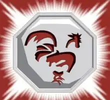

Dentre as virtudes do signo de Galo está a estima pela boa educação, pelo refinamento e pela polidez que, impõe seu espírito ordeiro e pacato. Além disso, são pessoas bondosas e fiéis. Os nativos do signo de Galo são as pessoas nascidas nas seguintes datas:
Talismã do Galo
Esse talismã permite levitar objetos.